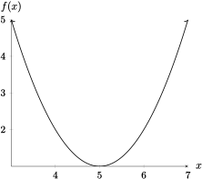

Section 3.3 How Derivatives Affect the Shape of a Graph
Objectives
Use the Increasing/Decreasing Test to determine the intervals over which a function is increasing or decreasing
Use the First Derivative Test and the Second Derivative Test to identify local extrema
Describe concavity of a function, estimate the intervals of concavity and location of inflection points
Use the Concavity Test to determine intervals over which a function is concave up or concave down and locate inflection points
Use derivatives to identify qualitative information about a function and use the information along with other given properties to sketch the graph of the function
Subsection 3.3.1 Before Class
https://mymedia.ou.edu/media/3.3-1.mp4/1_6ntbtqd6https://mymedia.ou.edu/media/3.3-2/1_q3uahwvkSubsubsection 3.3.1.1 Increasing/Decereasing Test
Theorem 3.3.1. Increasing/Decreasing.
Let \(f\) be a differentiable function on the interval \((a,b)\text{.}\) If \(f'(x) \gt 0\) on \((a,b)\text{,}\) then \(f\) is increasing on \((a,b)\text{.}\) If \(f'(x) \lt 0\) on \((a,b)\text{,}\) then \(f\) is decreasing on \((a,b)\text{.}\)Example 3.3.2.
Let \(f(x) = (x-5)^2 + 1\text{.}\)Sketch the graph of \(f\text{,}\) and visually determine where the function is increasing and decreasing.
Now, use the Increasing/Decreasing Test to determine the intervals where \(f\) is increasing and decreasing.
-

The function is increasing on \((5,\infty)\) and decreasing on \((-\infty,5)\text{.}\)
Using the Increasing/Decreasing Test, we again find that the function is increasing on \((5,\infty)\) and decreasing on \((-\infty,5)\text{.}\)
Example 3.3.3.
Let \(f(x) = 3x^4-4x^3-12x^2+5\text{.}\) Find the intervals where \(f\) is increasing and decreasing.Subsubsection 3.3.1.2 Local Extrema
Fermat's Theorem tells us that if we have a local max or min at input \(x = c\text{,}\) then \(c\) is a critical number of \(f\text{.}\) We need some more machinery in order to classify extrema.
Theorem 3.3.4. First Derivative Test.
Suppose that \(c\) is a critical number of a continuous function \(f\text{.}\) If \(f'\) changes from positive to negative at \(c\text{,}\) then \(f\) has a local maximum at \(c\text{.}\) If \(f'\) changes from negative to positive at \(c\text{,}\) then \(f\) has a local minimum at \(c\text{.}\) If \(f'\) does not change sign around \(c\text{,}\) then \(f\) has no local maximum or minimum at \(c\text{.}\)Example 3.3.5.
Find the local maximum and minimum values of the function \(g(x) = x + 2\sin x\) on \(0\leq x\leq 2\pi\text{.}\)Example 3.3.6.
Let \(f(x) = 200 + 8x^3 + x^4\text{.}\) Find the intervals where \(f\) is increasing, decreasing, and identify local extrema of \(f\text{.}\)Subsubsection 3.3.1.3 Concavity
The first derivative tells us information about where a function is increasing or decreasing, and where it has horizontal tangent lines. The second derivative tells us information about how a function bends.
Definition 3.3.7. Concave Up/Concave Down.
If the graph of \(f\) lies above all of its tangents on an interval \(I\text{,}\) then it is said to be concave up on \(I\text{;}\) if \(f\) lies below all of its tangents on \(I\text{,}\) then it is said to be concave down on \(I\text{.}\)
Definition 3.3.8. Inflection Point.
A point \((c,f(c))\) on a curve \(y = f(x)\) is called an inflection point if \(f\) is continuous there and the curve changes concavity.
Example 3.3.9.
Determine the sign of the second derivative for the function graphed below, and note any inflection points.Subsection 3.3.2 Pre-Class Activities
Example 3.3.10.
Let \(f(x) = x^3-3x^2-9x+4\text{.}\) Find the intervals where \(f\) is increasing and decreasing.Example 3.3.11.
Given the picture below, find the open intervals where \(f\) is increasing, decreasing, concave up, concave down. Identify the coordinates of any inflection points.Example 3.3.12.
The graph of the derivative, \(f'\text{,}\) is given below. On what interval(s) is \(f\) increasing or decreasing? At what inputs does \(f\) have a local maximum or minimum?Subsection 3.3.3 In Class
Theorem 3.3.13. Concavity Test.
If \(f''(x) \gt 0\) for all \(x\) in \(I\text{,}\) then the graph of \(f\) is concave up on \(I\text{.}\) If \(f''(x) \lt 0\) for all \(x\) in \(I\text{,}\) then the graph of \(f\) is concave down on \(I\)Example 3.3.14.
Let \(f(x) = x^3 - 3x\text{.}\)Find the intervals where \(f(x)\) is increasing and decreasing.
Identify the local maxima and minima of \(f(x)\text{.}\)
Where is \(f\) concave up? Where is it concave down?
Identify any inflection points of \(f\text{.}\)
\(f(x)\) is increasing on \((-\infty,-1)\cup (1,\infty)\) and decreasing on \((-1,1)\)
The max occurs at \((-1,2)\) and the min occurs at \((1,-2)\)
\(f(x)\) is concave up on \((0,\infty)\) and concave down on \((-\infty,0)\)
The inflection point is at \((0,0)\)
Example 3.3.15.
Sketch a possible graph for a function \(f\) that satisfies the conditions:\(f(0) = 0\text{,}\) \(f(2) = 3\text{,}\) \(f(4) = 6\text{,}\) \(f'(0) = f'(4) = 0\)
\(f'(x) \gt 0\) for \(0 \lt x \lt 4\text{,}\) \(f'(x) \lt 0\) for \(x \lt 0\) and for \(x \gt 4\)
\(f''(x) \gt 0\) for \(x \lt 2\text{,}\) \(f''(x) \lt 0\) for \(x \gt 2\)
Theorem 3.3.16. Second Derivative Test.
Suppose \(f''\) is continuous near \(c\text{,}\) and \(f'(c) = 0\text{.}\) If \(f''(c) \gt 0\text{,}\) then \(f\) has a local minimum at \(c\text{.}\) If \(f''(c) \lt 0\text{,}\) then \(f\) has a local maximum at \(c\text{.}\)
Example 3.3.17.
Sketch the curve \(y = x^4-4x^3\) by finding the intervals of increasing/decreasing, local maxima/minima, intervals of concavity, and inflection point(s).Example 3.3.18.
Sketch the curve \(y=\dfrac{1}{2}x^4 -4x^2 + 3\)Example 3.3.19.
Sketch the curve \(f(x)=x^3 - 12x + 2\)Example 3.3.20.
Sketch the curve \(h(x) = 5x^3-3x^5\)Example 3.3.21.
Sketch the graph of a function that satisfies the criteria outlined below:Vertical asymptote at \(x = 0\text{.}\)
\(f'(x) \gt 0\) if \(x \lt -2\text{,}\) \(f'(x) \lt 0\) if \(x \gt -2\) (for \(x\neq 0\)).
\(f''(x) \lt 0\) if \(x \lt 0\text{,}\) \(f''(x) \gt 0\) if \(x \gt 0\text{.}\)
Example 3.3.22.
Sketch the graph of a function that satisfies the criteria outlined below:\(f'(5) = 0\text{,}\) \(f'(x) \lt 0\) when \(x \lt 5\text{,}\) \(f'(x) \gt 0\) when \(x \gt 5\)
\(f''(2) = 0\text{,}\) \(f''(8) = 0\text{,}\) \(f''(x) \lt 0 \) when \(x \lt 2\) or \(x \gt 8\text{,}\) \(f''(x) \gt 0\) for \(2\lt x\lt 8\text{.}\)
Subsection 3.3.4 After Class Activities
Example 3.3.23.
Find the intervals on which \(\sin x + \cos x\) is increasing/decreasing on \([0,2\pi]\text{,}\) the local maximum and minimum values of the function on the interval, and the intervals of concavity/inflection points.Example 3.3.24.
Find the local maximum and minimum values of \(f(x) = \dfrac{x^2}{x-1}\) using the First and Second Derivative Tests.Example 3.3.25.
A graph is given below.The curve is the graph of \(f\)
The curve is the graph of \(f'\text{.}\)
The curve is the graph of \(f''\text{.}\)
\(\displaystyle x=3,5\)
\(\displaystyle x=2,4,6\)
\(\displaystyle x=1,7\)